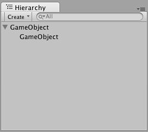

Hierarchy

The Hierarchy contains every GameObject in the current Scene. Some of these are direct instances of asset files like 3D models, and others are instances of Prefabs, custom objects that will make up much of your game. You can select objects in the Hierarchy and drag one object onto another to make use of Parenting (see below). As objects are added and removed in the scene, they will appear and disappear from the Hierarchy as well.
Parenting
Unity uses a concept called Parenting. To make any GameObject the child of another, drag the desired child onto the desired parent in the Hierarchy. A child will inherit the movement and rotation of its parent. You can use a parent object's foldout arrow to show or hide its children as necessary.

Two unparented objects

One object parented to another
One object parented to another
To learn more about Parenting, please review the Parenting section of the Transform Component page.
Page last updated: 2012-10-18